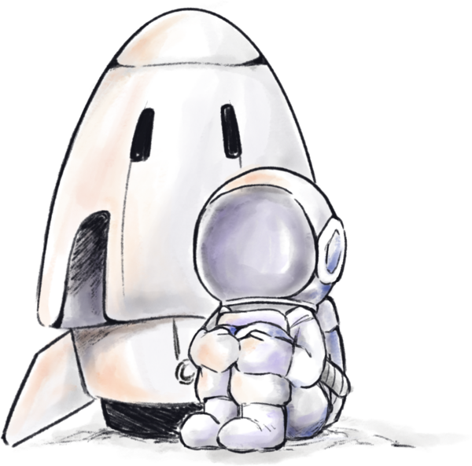

我相信每個人發出的訊號都需要被接收
宇宙訊號航行紀錄——一份以觀測員身份，記錄我如何接收、理解並回應他人訊號的個人紀錄。
開始接收 →
我將人與人之間的關係轉化為宇宙中的訊號系統。每個人都像一顆獨立運行的星球，擁有自己的軌跡、情緒與故事。有些訊號明顯而強烈，有些則微弱得難以察覺。
我將自己想像成一位訊號觀測員，在接收、理解與轉化訊號後，以對話、音樂或陪伴回應他人。而傾聽，對我而言就像在廣大的宇宙中搜尋訊號——透過觀察、接收與回應，我們得以與不同的星球建立連結。
「我無法接收所有訊號，也無法解答所有問題，只能透過他們發出的訊號去理解他們。」
而我習慣做的事情，就是接收這些訊號，試著理解它背後真正想表達的內容。
從保持開放到建立雙向連結，這是我每一次「接收」他人時，實際發生的五個階段。
保持開放，等待訊號出現。
發現訊號來源。
接收並理解訊號內容。
透過不同能力進行回應。
建立雙向訊號連線。
以下為範例紀錄，之後可替換為真實作品或合作經驗。
如果你也在尋找一個能接收訊號的觀測員，歡迎留下你的座標。